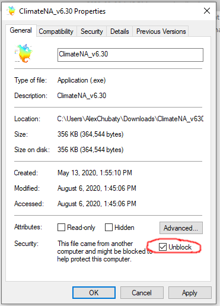

Working with LandR-fireSense
Alex M. Chubaty and Ian M. S. Eddy
Source:vignettes/LandR-fireSense.Rmd
LandR-fireSense.RmdGetting started with LandR and fireSense
This guide provides a template project setup for using the LandR forest succession model with the FireSense climate-sensitive fire model. There are several components you, as the project user/developer, will need to develop and customize for your project, which will be noted below.
Please ensure you have reviewed the following, and have completed the prerequisite installations of R, RStudio, SpaDES, GIS software, and git.
Create new project
Start by creating a new git repository on GitHub (see https://docs.github.com/en/github/getting-started-with-github/create-a-repo) which will host your project.
-
Clone your new repo to your local machine:
git clone https://github.com/USERNAME/MYREPO /path/to/my/projects/myNewProject -
Create a new SpaDES project at this location:
library("SpaDES.project") newProject("myNewProject", "path/to/my/projects", type = "LandR-fireSense", open = FALSE) Open your project in Rstudio (see https://support.rstudio.com/hc/en-us/articles/200526207-Using-Projects).
Ensure packages installed to project library
It’s best to use a standalone package library, and we highly recommend using one here.
Check that the project’s packages/ subdirectory is being used:
Ensure some key packages are installed (remaining packages used by modules will be installed on first run).
install.packages("Require")
library(Require)
Require("PredictiveEcology/climateData")Add LandR and fireSense modules
We strongly recommend using git for version control, and using git submodules to manage individual project modules.
cd /path/to/my/projects/myNewProject
## add LandR modules
git submodule add https://github.com/PredictiveEcology/Biomass_borealDataPrep modules/Biomass_borealDataPrep
git submodule add https://github.com/PredictiveEcology/Biomass_core modules/Biomass_core
git submodule add https://github.com/PredictiveEcology/Biomass_regeneration modules/Biomass_regeneration
git submodule add https://github.com/PredictiveEcology/Biomass_speciesData modules/Biomass_speciesData
## add fireSense modules
git submodule add https://github.com/PredictiveEcology/fireSense modules/fireSense
git submodule add https://github.com/PredictiveEcology/fireSense_dataPrepFit modules/fireSense_dataPrepFit
git submodule add https://github.com/PredictiveEcology/fireSense_dataPrepPredict modules/fireSense_dataPrepPredict
git submodule add https://github.com/PredictiveEcology/fireSense_IgnitionFit modules/fireSense_IgnitionFit
git submodule add https://github.com/PredictiveEcology/fireSense_IgnitionPredict modules/fireSense_IgnitionPredict
git submodule add https://github.com/PredictiveEcology/fireSense_EscapeFit modules/fireSense_EscapeFit
git submodule add https://github.com/PredictiveEcology/fireSense_EscapePredict modules/fireSense_EscapePredict
git submodule add https://github.com/PredictiveEcology/fireSense_SpreadFit modules/fireSense_SpreadFit
git submodule add https://github.com/PredictiveEcology/fireSense_SpreadPredict modules/fireSense_SpreadPredictOptionally, you can add branch info for each of the submodules by editing the .gitmodules file and running git submodule sync.
NOTE: Alternatively, each of these modules can be fetched using SpaDES.install::getModule(), which will download the latest versions. However, this approach makes it harder to update modules in the future.
Create data prep module for your study area
newModule("myStudyArea_dataPrep", path = "modules")At a minimum, this module needs to create the following objects to be passed to the LandR and fireSense data prep modules:
outputObjects = bindrows(
createsOutput("historicalClimateRasters", objectClass = "list",
desc = "list of a single raster stack - historical MDC calculated from ClimateNA data"),
createsOutput("projectedClimateRasters", objectClass = "list",
desc = "list of a single raster stack - projected MDC calculated from ClimateNA data"),
createsOutput("rasterToMatch", objectClass = "RasterLayer",
desc = "template raster"),
createsOutput("rasterToMatchLarge", objectClass = "RasterLayer",
desc = "template raster for larger area"),
createsOutput("rasterToMatchReporting", objectClass = "RasterLayer",
desc = "template raster for reporting area"),
createsOutput("sppColorVect", objectClass = "character",
desc = "species colours for plotting"),
createsOutput("sppEquiv", objectClass = "character",
desc = "table of LandR species names equivalencies"),
createsOutput("sppEquivCol", objectClass = "character",
desc = "name of column to use in sppEquiv"),
createsOutput("standAgeMap2011", objectClass = "RasterLayer",
desc = "time since disturbance raster for year 2011"),
createsOutput("studyArea", objectClass = "SpatialPolygonsDataFrame",
desc = "study area used for simulation (buffered to mitigate edge effects)"),
createsOutput("studyAreaLarge", objectClass = "SpatialPolygonsDataFrame",
desc = "study area used for module parameterization (buffered)"),
createsOutput("studyAreaReporting", objectClass = "SpatialPolygonsDataFrame",
desc = "study area used for reporting/post-processing")
)For a concrete example of a study area module used for the Western Boreal Initiative (WBI), see https://github.com/PredictiveEcology/WBI_dataPrep_studyArea/.
Climate data preparation
We have used ClimateNA (http://climatena.ca/) to downscale monthly climate data to get historic and future projected monthly drought code (MDC) rasters for our study areas. Unfortunately, ClimateNA does not currently have a scriptable programming interface, and these climate layers must be assembled manually using the ClimateNA point-and-click graphical tool.
-
Download and install the ClimateNA software (Windows only).
Go to http://climatebc.ca/downloads/download.html and register your email. You will receive a confirmation email containing a link to download the latest version.
Download and extract the zip file from the link in the email. This extracts the standalone program and its files; it does not ‘install’ the program in the traditional sense.
-
Windows security restrictions may prevent you from running the program. Right click the executable file and go to ‘Properties’. Check the ‘Unblock’ box under the ‘Security’ heading, and ‘Apply’ the settings.

-
Download a suitable digital elevation model (DEM) that covers your study area. We have used the USGS GTOPO30 product to produce 1 or 3 arc minute DEMs.
- Use
climateData::makeClimateDEM()to prepare the DEM for your study area.
- Use
-
Use ClimateNA to fetch monthly historic (1991-2019) and projected data.
-
The interface is split into two parts: “Single Location” and “Multi-location” panes. We will be using the multi-location panes, so ignore the settings in the single location panes.

In the first dropdown in the multi-location pane, select ‘Historical Time Series’.
In the second dropdown, select ‘Monthly variables’. You will be prompted to supply start and end years (for fireSense we are using 1991-2019). NOTE: historical data will take a long time to fetch and process, but the process can be resumed from which ever year was in progress when the download was interrupted.
Next, click the ‘Select input file’ button and find the
.ascDEM raster file for your study area. Make sure you select ‘asc’ in the file selection pane.Next, click on the ‘Select output file’ box to choose a save location for the processed data files. NOTE: the resulting data files might use several gigabytes to hundreds of gigabytes in disk space, depending on the date range and geographic extent of your study area.
Click ‘Start TS’ to begin. It may take several days depending on the date range and geographic extent of your study area.
Repeat the steps above for ‘Future Time Series’. You will be asked to select a climate model from the dropdown list (for fireSense we are using CCSM4 RCP 4.5 and 8.5).
(Optional) After downloading all the climate data, you may wish to upload to a cloud-accessible location (e.g., Google Drive) to make it easy for collaborators to access the raw files if needed.
-
-
Create raster maps of MDC for use with fireSense:
Use
climateData::makeMDC()to create the MDC rasters.Upload these to Google Drive (make note of the Google file ids) for use with
prepInputs()in your study area data prep module.
Project script configuration
The main project script is
00-global.R. All subsequent scripts aresourced from this file.Set user (or machine) specific options in
config.yml, such as cache path, cache type, Google account info, etc.Additional user options can be added to the config file, just remember to assign these values in
01-init.R, even if they aren’t used until later scripts.Simulation paths (e.g., those used by modules) are defined in
02-paths.R. Use relative paths only. Different cache paths may be specified for finer control.Any additional packages used can be specified in
03-packages.R.Package options are set in
04-options.R. User-specific options should not be defined here (set these inconfig.yml).The Google Drive file ids defined in
05-google-ids.Rwill be blank to start with. As you run the subsequent scripts and upload simulation results, you can add the Google file ids to the list defined here. This allows future runs to skip long-running or intensive computations, such as those required to runfireSense_SpreadFit, and download a pre-computed result.You run your study area data prep module by invoking this script. This script may require additional updating/editing (e.g., the name of the module you created).
Subsequent scripts (07a, 07b, 07c, 08a, 08b, and 08c) shouldn’t need much tweaking by the user.
The main dynamic simulation is run by
09-main-sim.R.